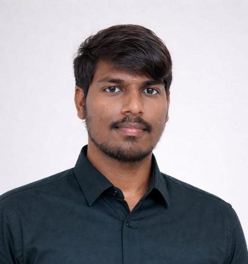
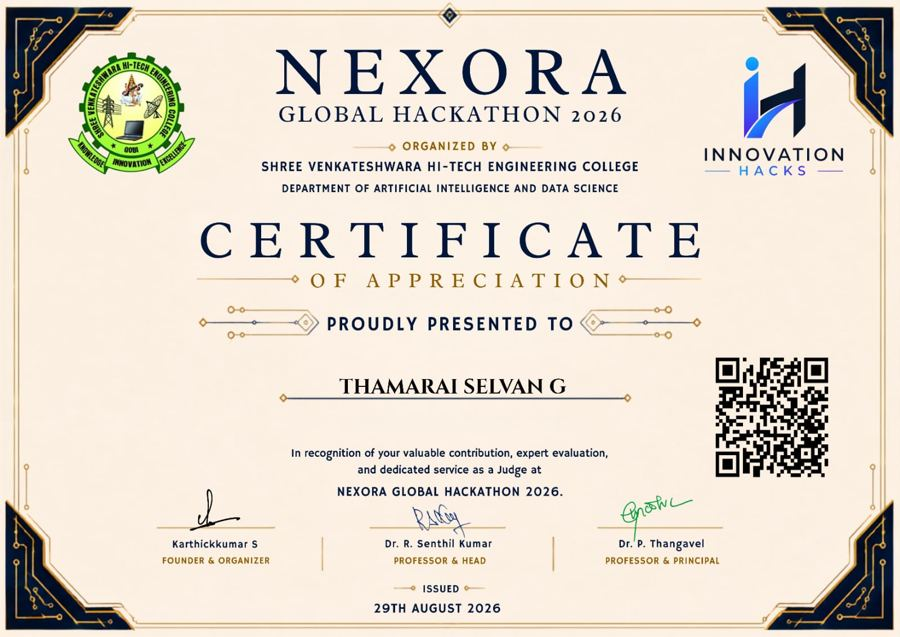
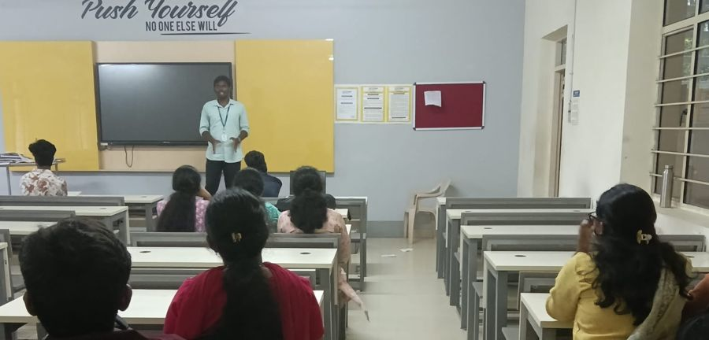
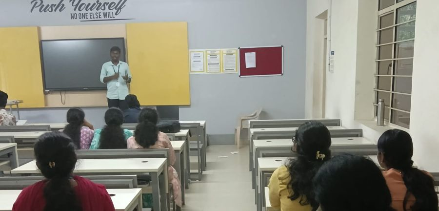
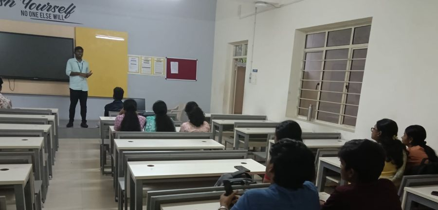

THAMARAI SELVAN G
AI & Machine Learning DeveloperData Science & Full-Stack Developer
Transforming Data into Intelligence. Turning Ideas into Innovation.
Building intelligent systems, exploring data, and engineering solutions for real-world problems, with a focus on healthcare AI and IoT.
01About Me

I prepared for NEET in 2023 and 2024, with an early interest in medicine and healthcare. My path moved towards engineering, but that interest stayed with me. I joined Sri Eshwar College of Engineering to study Artificial Intelligence and Data Science.
Along the way I have explored how machine learning, deep learning, data science and IoT can solve practical problems. I have built healthcare-oriented projects, medical imaging applications, predictive maintenance systems, computer vision tools and full-stack platforms, and I have taken part in hackathons, research presentations and project expos.
It has not always been smooth. Some of my ideas were rejected or restricted. I kept experimenting, improved the implementations and looked for places to present the work. That is how healthcare curiosity became AI-powered healthcare prototypes and published research.
I see engineering as identifying a problem, researching it, testing ideas and learning from failures. My goal is to become an AI/ML and Data Science engineer who builds intelligent, scalable and socially useful technology.
02Education
B.Tech, Artificial Intelligence & Data Science
Sri Eshwar College of Engineering, Coimbatore
2025 to 2029CGPA 9.05 / 10Class XII (Bio-Maths)
Sree Vetri Vikas Matric Hr Sec School, Dharmapuri
93%Class X
Sree Vetri Vikas Matric Hr Sec School, Dharmapuri
98%03Technical Skills
Tools I work with. No proficiency percentages are claimed.
04Featured Projects
Descriptions follow my project brief and the linked repositories. Open a card for details. Nothing here is a clinically validated medical device.
05Complete Project Archive
Smaller builds and experiments, listed separately from the major projects.
06Hackathon Achievements
Totals are as I report them. Individual results below are listed separately and verified against certificates or official emails.
Other Hackathon Participations
Hackathons I took part in, each backed by a participation certificate. Tap one to enlarge.
07Leadership, Organizing & Evaluation
HACKFEST'26: Hackathon Organizer & Coordinator
National-level online hackathon on Devpost, theme "SHINE UP WITH AI". 7 to 22 June 2026, 179 participants, three winner positions with certificates. Co-coordinator: PP Monish (CSE). Listed on the judging panel page as Hackathon Organizer.
Event pageJudge: Nexora Global Hackathon 2026
Certificate of appreciation for expert evaluation as a judge, issued 29 Aug 2026 (Shree Venkateshwara Hi-Tech Engineering College, Dept. of AI & DS).

Round 1 Evaluator: SELFIE Hackathon
Round 1 evaluator: technical assessment of participant ideas and submissions, including the briefing given to participants before judging and the instructions after judging finished (15 Oct 2026).



Evaluator certificate: pending.
08Research & Publications
IoT-Based Multi-Parameter Stroke Risk Monitoring System Using Wearable Sensors and Machine Learning
G Thamarai Selvan. International Journal of Science, Engineering and Technology (IJSET), Vol. 14, Issue 4, 2026. Published on Zenodo 14 July 2026.
- Abstract
- A smart healthcare system using IoT with AI monitors multiple physiological signals in real time. Wearable sensors measure heart rate, SpO2, body temperature and body movement, collected by an ESP32 and sent to a cloud platform. A Random Forest model classifies risk as safe, moderate or high, and buzzer, LED and mobile alerts trigger on abnormal readings.
- Methodology
- ESP32 with MAX30102, MPU6050, AD8232 and DS18B20 sensors; ThingSpeak dashboards; Telegram alerts; Random Forest with an 80/20 train-test split.
- Reported results
- Accuracy 94%, precision 92%, recall 91%, F1 91.5%. The paper notes the dataset mixes sensor data with values generated from clinical ranges, demonstrates the hardware in simulation, and states clinical validation is still required.
- Identifier
- DOI 10.5281/zenodo.21351006
09Data Analytics & Business Intelligence: Power BI
Microsoft Power BI
Interactive dashboards, DAX, Power Query, KPI monitoring, data modelling and business reporting.
ExcelPandasNumPyMatplotlibSeabornPlotly10Certifications & Workshops
Certificates from technical workshops, symposiums, and developer programs. (For hackathons, see Hackathon Achievements).